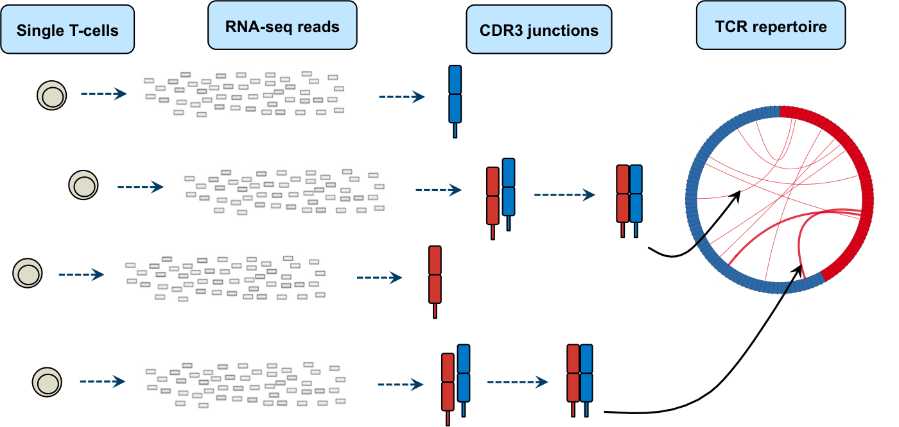
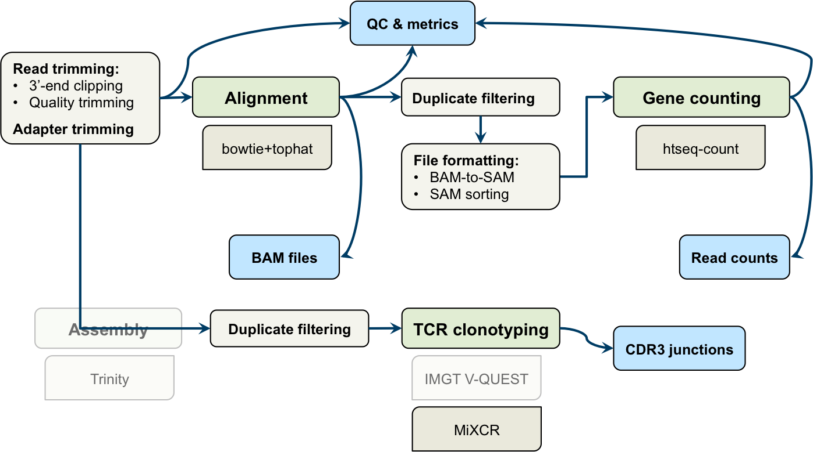
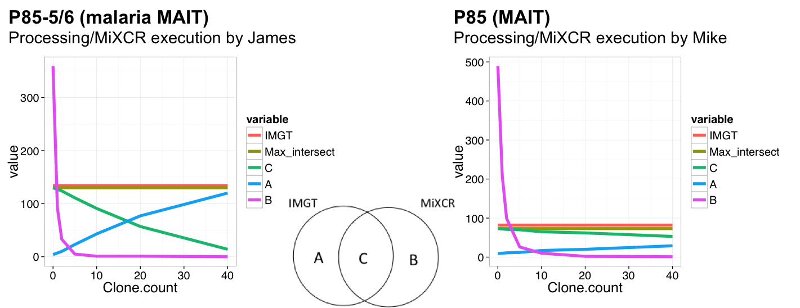
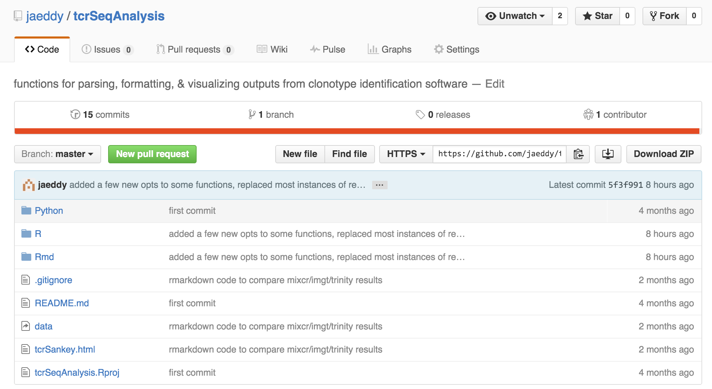
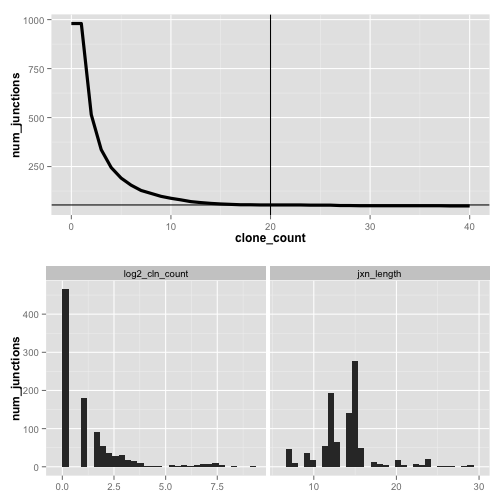
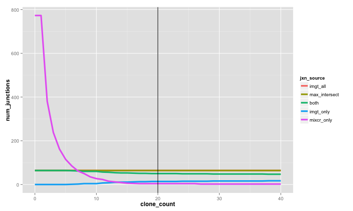
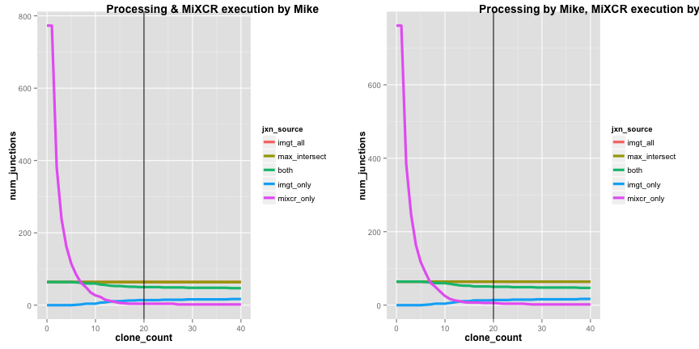
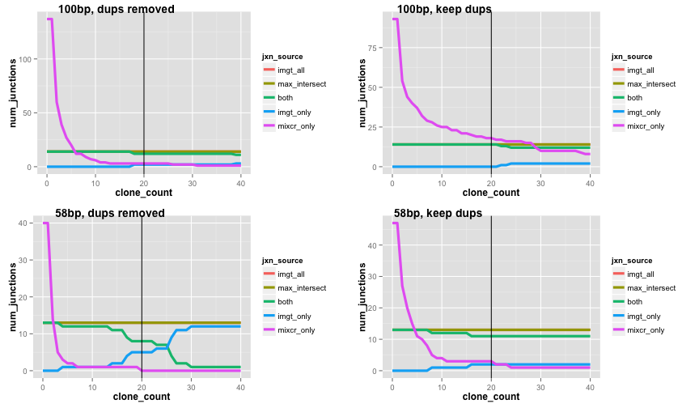
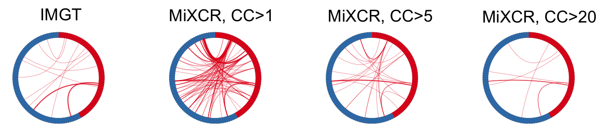

TCR-seq Pipeline Development
Getting to know MiXCR a little better
James Eddy
From single cells to clonotypes
TCR-sequencing at BRI

TCR-seq: gene quantification & clonotype identification
C1 RNA-seq Galaxy workflow developed by Mike Mason et al.

MiXCR for clonotype identification & quantification
Avoiding the IMGT bottleneck
- Very fast, accurate alignment of reads to CDR3 (and other T-, B-cell
features)
- Runs locally, without need for Trinity transcriptome assembly
- Found, implemented, & tested by Mike
- Produced very similar results to IMGT V-QUEST in initial testing (later, we encountered some discrepancies related to input data)
Plugging in MiXCR
Potential modifications to improve pipeline performance & reliability

Investigating discrepancies with MiXCR
Variation in MiXCR output & overlap with IMGT
- Looking at MiXCR results from different projects, Peter observed dropoff in number of functional junctions identified
- By extension, more recent projects also showed worse overlap with IMGT
- Overlap in these cases appears highly dependent on cutoff used for
clone countmetric - For some of the problematic projects, MiXCR was run by me instead of Mike
- Projects were also processed in Galaxy at different times
Taking a closer look at P85
Exploring MiXCR results with MAIT cells

Working with clonotype data in R
New code to save time/effort for testing & analysis

Working with clonotype data in R
Combining MiXCR outputs
source("R/prep_junctions.R")
mixcr_folder <- "data/P85/P85_MAIT/mixcrOutput_MM"
project <- "P85"
out_folder <- mixcr_folder
# combine MiXCR junctions into a single file
mixcr_file <- combine_mixcr_outputs(mixcr_folder, out_folder, project)
Working with clonotype data in R
Reading & formatting MiXCR outputs
mixcr <- format_mixcr_jxns(mixcr_file) %>% # read, format junctions
filter_mixcr_jxns() %>% # remove non-functional, aa length < 7
list(jxns = .) # store in list object
mixcr$jxns
| lib_id | cln_count | v_gene | v_gene_score | j_gene | j_gene_score | junction |
|---|---|---|---|---|---|---|
| lib3635 | 2 | TRAV8-7 | 67 | TRAJ19 | 55 | CAGADRLQTGMRGAF |
| lib3636 | 8 | TRAV24 | 80 | TRAJ7 | 41 | CAFIFRIWSKELYSNF |
| lib3636 | 3 | TRAV8-7 | 44 | TRAJ19 | 36 | CAGADRLQTGMRGAF |
| lib3636 | 1 | TRBV19 | 74 | TRAJ51 | 50 | CGQLYLKPLSDFPV |
| lib3637 | 190 | TRBV6-1 | 164 | TRBJ2-7 | 133 | CASSEGDSGGYEQYF |
Working with clonotype data in R
Visually inspecting MiXCR junction data

Working with clonotype data in R
Reading & formatting IMGT outputs
imgt_file <- "data/P85/P85_MAIT/complied_P85_Prilic_1_and_2_productive_trimmed_unique.txt"
imgt <- format_imgt_jxns(imgt_file) %>% # read and filter IMGT junctions
filter_imgt_jxns() %>% # remove non-functional, aa length < 7
filter(!str_detect(lib_id, "lib2.*")) %>% # remove older samples
list(jxns = .) # store in list object
imgt$jxns
| lib_id | v_gene | j_gene | junction |
|---|---|---|---|
| lib3637 | TRBV6-1 | TRBJ2-7 | CASSEGDSGGYEQYF |
| lib3638 | TRBV20-1 | TRBJ2-5 | CSAPTGDSETQYF |
| lib3639 | TRAV4 | TRAJ10 | CLVGVFTGGGNKLTF |
| lib3642 | TRAV1-2 | TRAJ33 | CAVMDSNYQLIW |
| lib3642 | TRBV6-4 | TRBJ2-3 | CASSPAGGTDTQYF |
Working with clonotype data in R
Inspecting IMGT & MiXCR junction overlap

Investigating discrepancies with MiXCR
Checking for user variability with P85

Investigating discrepancies with MiXCR
Checking the effect of RNA-seq parameters
- Read trimming: adapter trimming, 3' end trimming, quality trimming
- Duplicate removal: yes or no
- Read length: 100bp (long) vs. 58bp (short)
Testing: used RNA-seq data from flowcell C4WYJACXX (8/12/2014): 100bp reads
- selected 20 samples
- manually simulated shorter reads for same set of samples
- varied other parameters (updated Mike's code for running MiXCR to include options for read trimming, duplicate filtering, etc. - independent of Galaxy)
- ran both MiXCR & IMGT (bonus function:
compile_imgt_output())
Investigating discrepancies with MiXCR
Checking the effect of RNA-seq parameters

Investigating discrepancies with MiXCR
Examining inconsistencies in final TCR clonotypes
- For libraries from project P91 (T1D), MiXCR assigned different \alpha-\beta
(sometimes junctions, sometimes genes) combinations than IMGT V-QUEST
- Clonotypes from MiXCR highly dependent on clone count

Taking a closer look at P91
Tracking down the source of clonotype mismatches
- Compared MiXCR and IMGT outputs for project P91-11
- Used a 'moderate' clone count cutoff of 10
- When results disagreed, looked both at final clonotype outputs from MiXCR as well as intermediate results (i.e., alignments)
More new code! (for dealing with more TCR-related tasks)
source("R/inspect_tcrs.R")
Working with clonotype data in R
Constructing & inspecting TCRs from IMGT outputs
# combine TRAV and TRBV junctions for each library to construct TCRs
p91_imgt[["tcrs"]] <- p91_imgt$jxns %>%
construct_tcrs()
| lib_id | trav_gene | trav_jxn | trbv_gene | trbv_jxn |
|---|---|---|---|---|
| lib8472 | TRAV25 | CAGQTGANNLFF | TRBV4-3 | CASSQEVGTVPNQPQHF |
| lib8474 | TRAV12-3 | CAMSRILTGGGNKLTF | TRBV7-2 | CASSFPSSPLHF |
| lib8451 | TRAV25 | CAGQTGANNLFF | TRBV4-3 | CASSQEVGTVPNQPQHF |
| lib8453 | TRAV16 | CALLKGSGAGSYQLTF | TRBV20-1 | CSAPRGASGGSSYNEQFF |
| lib8493 | TRAV8-4 | CAVYGGATNKLIF | TRBV5-1 | CASSLDPGPNEQFF |
Working with clonotype data in R
Constructing TCRs with MiXCR: selecting top junctions
# for each library, sort junctions first by clone count then by alignment score
# to select top junction sequence and top corresponding V gene hit for both the
# alpha and beta chain
p91_mixcr[["tcrs"]] <- p91_mixcr$jxns %>%
select_top_jxns() %>% # return only top TRAV and TRBV for each library
construct_tcrs()
| lib_id | trav_gene | trav_jxn | trbv_gene | trbv_jxn |
|---|---|---|---|---|
| lib8445 | TRAV26-2 | CILRDTISNFGNEKLTF | TRBV11-1 | CASSFGSSYYGYTF |
| lib8449 | TRAV26-2 | CILRDTISNFGNEKLTF | TRBV11-1 | CASSFGSSYYGYTF |
| lib8451 | TRAV25 | CAGQTGANNLFF | TRBV4-3 | CASSQEVGTVPNQPQHF |
| lib8462 | TRAV8-7 | CAGADRLQTGMRGAF | TRBV9 | CASSTRQNQPQHF |
| lib8464 | TRAV25 | CAGQTGANNLFF | TRBV12-1 | CEKHNFVF |
Working with clonotype data in R
Visualizing TCRs with Sankey diagrams
- Circos plots look cool, but aren't as informative for troubleshooting
- I also don't have a good way to generate them on the fly...
- Wanted a way to quickly inspect the connections between libraries, V genes, and junctions: Sankey diagrams (and d3
- oooo..)!
# combine IMGT and MiXCR TCRs
imgt_mixcr <- p91_imgt$tcrs %>%
mutate(tcr_source = "IMGT") %>%
bind_rows(p91_mixcr$tcrs %>%
mutate(tcr_source = "MiXCR")) %>%
list(tcrs = .)
# construct and display a sankey network linking libs to genes to junctions
imgt_mixcr[["plot"]] <-
build_sankey_network(imgt_mixcr$tcrs,
chain = "both") %>%
build_sankey_plot(sankey_height = 500)
Working with clonotype data in R
Viewing all TCR relationships for P91 libraries
Working with clonotype data in R
Viewing only \beta chain for P91 libraries
Investigating discrepancies with MiXCR
Looking only at different TRBV gene/junction assignments
Investigating discrepancies with MiXCR
TRBV11-1 vs. TRBV7-9: short reads, non-unique alignments
>>> Alignments with V gene:
TRBV11-1*00 (total score = 160.0)
Alignment of Sequence0 (score = 160.0):
255 GACTCGGCCATGTATCTCTGTGCCAGCAGCTT 286
||||||||||||||||||||||||||||||||
0 GACTCGGCCATGTATCTCTGTGCCAGCAGCTT 31
BBBBBFFFFFFFFFFFFFFFFFFFFFFFFFFF
TRBV7-9*00 (total score = 160.0)
Alignment of Sequence0 (score = 160.0):
255 GACTCGGCCATGTATCTCTGTGCCAGCAGCTT 286
||||||||||||||||||||||||||||||||
0 GACTCGGCCATGTATCTCTGTGCCAGCAGCTT 31
BBBBBFFFFFFFFFFFFFFFFFFFFFFFFFFF
Investigating discrepancies with MiXCR
New idea: MiXCR with Trinity?
- Came up in discussions with Mike, Scott, Peter
- Input data for IMGT is actually assembled contigs produced by Trinity (not short reads)
- With help from Mike, modified MiXCR code to run on Trinity outputs instead of trimmed FASTQs (wasn't too hard - MiXCR allows FASTA file input)
- Compared new results
Developing a new approach for MiXCR
MiXCR with Trinity reproduces IMGT results
Developing a new approach for MiXCR
Not just \beta chain - results match for both TRAV and TRBV
Insights & advice from the MiLabratory
Following up with the developers of MiXCR
Investigating discrepancies with MiXCR
Revisiting read length in MiXCR clonotype identification
- Bulk libraries from project P48